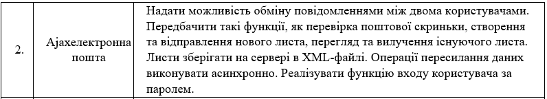
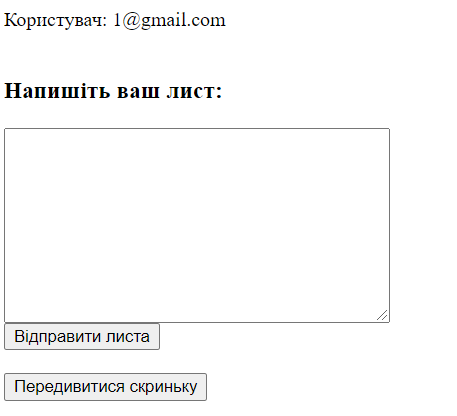
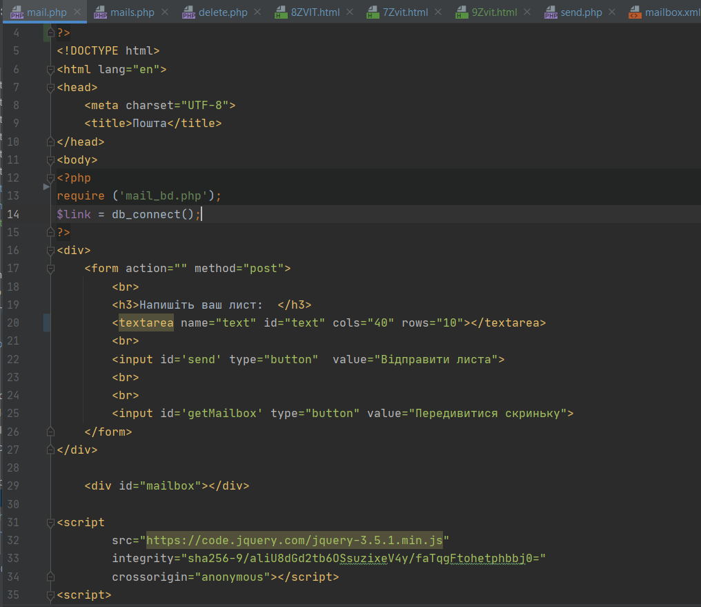
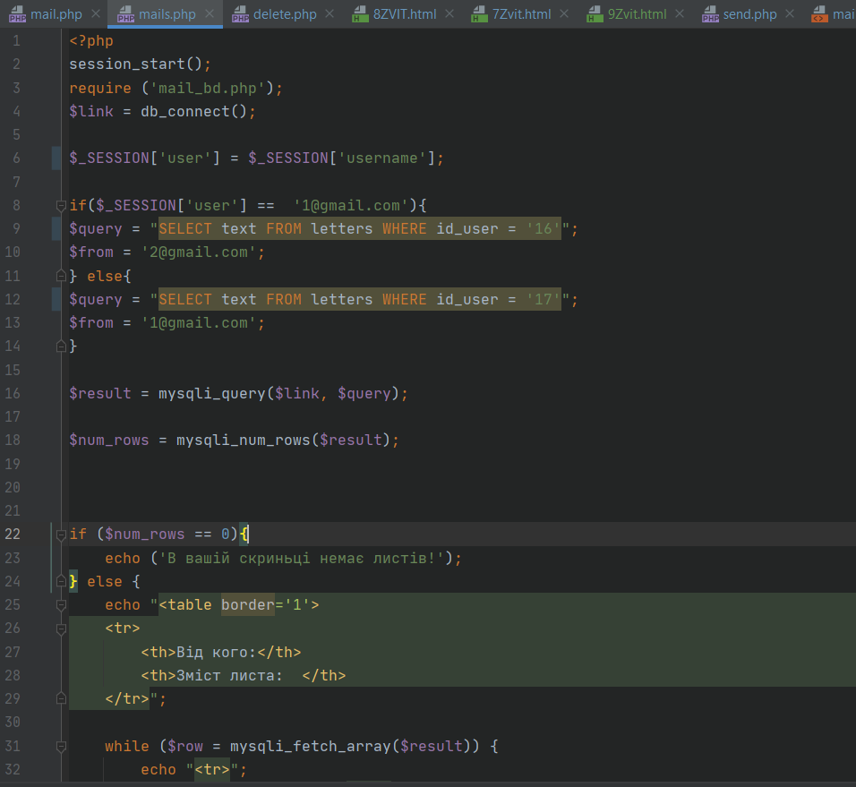
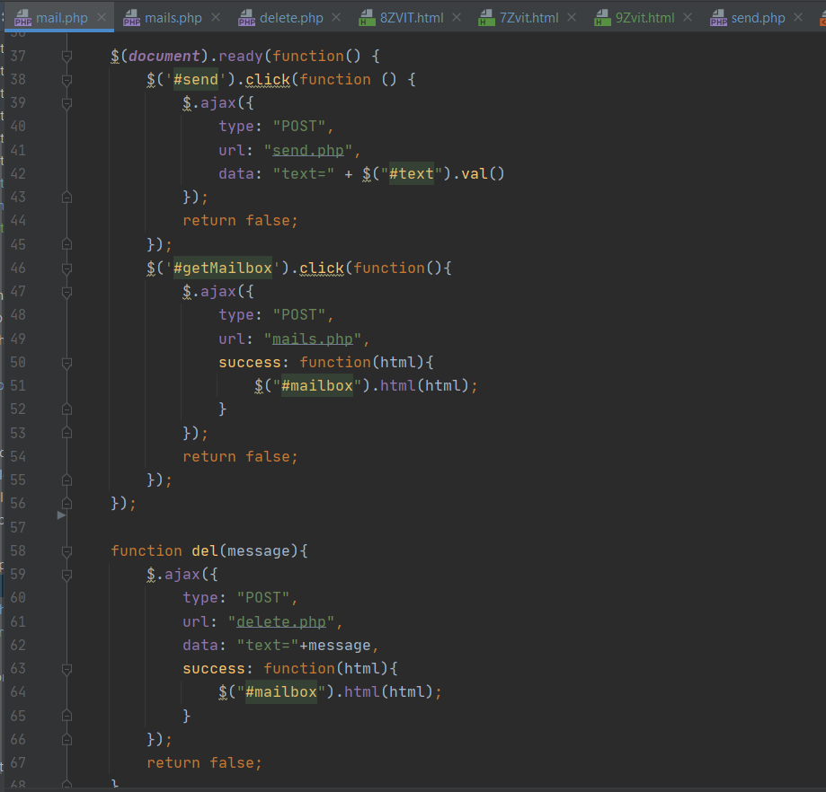
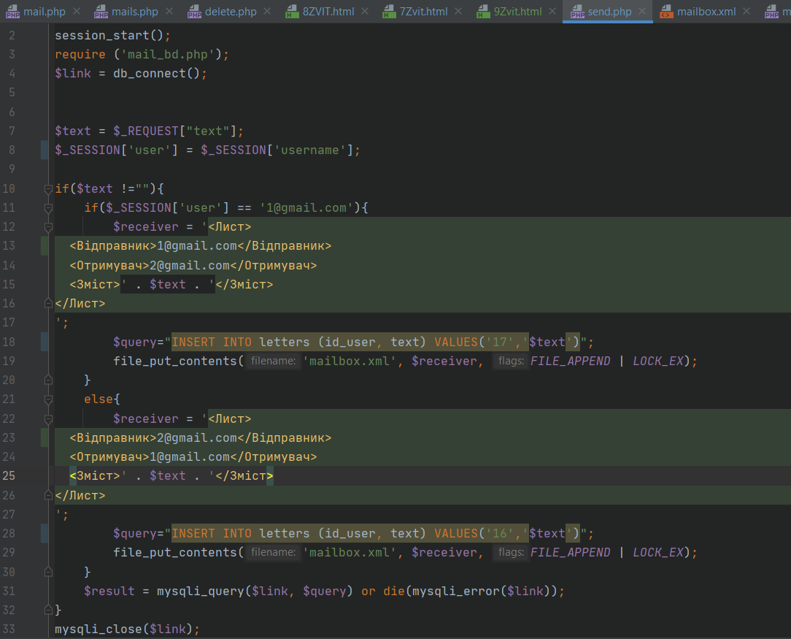
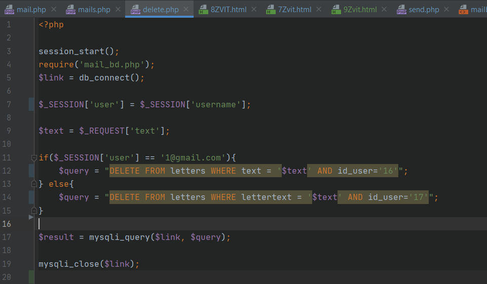
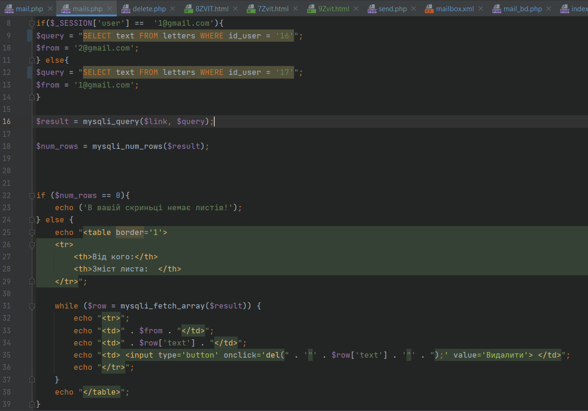
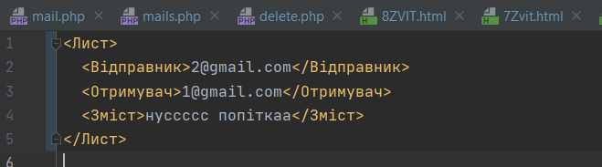
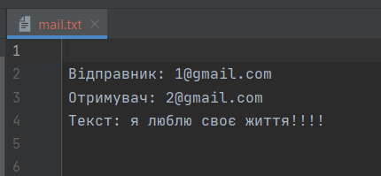

Мета та поставновка задачі
Тема:АСИНХРОННА ВЗАЄМОДІЯ КЛІЄНТСЬКОЇ І СЕРВЕРНОЇ ЧАСТИН WEB- ЗАСТОСУВАНЬ З ВИКОРИСТАННЯМ ТЕХНОЛОГІЇ AJAX. ФОРМУВАННЯ AJAX-ЗАПИТУ ЗАСОБАМИ JQUERY.
Мета: придбати практичні навички роботи основ асинхронного обміну даними мовою JavaScript за допомогою технології Ajax та бібліотеки Jquery, формування Аjax-запиту засобами jQuery при реалізації практичних задач Web-програмування.
ХІД ВИКОНАННЯ РОБОТИ
1. У звітному HTML-документі розмістити тему та постановку задачі лабораторної роботи № 9.
2. Виконати асинхронну взаємодію клієнтської і серверної частин WEB- застосування за допомогою технології AJAX. (завдання див. В Таблиці1) Сфоормувати Аjax-запит засобами jQuery.
3. Продемонструвати програмний інтерфейс обробки клієнтських запитів-команд на серверній стороні.
4. Результат виконання даного запиту розмістити у звітному HTML-документі та записати у текстовий файл.
5. У власний сайт добавити 3 нових запита, з використанням технології AJAX.
6. Результат роботи запитів відобразити у звітному документі і записати у текстовий файл.
7. Продемонструвати повний функціонал вашого власного сайту.Для цього:
розписати по пунктам, що виконує програма у дев’ятій лабораторній роботі (прямо написати список дій (запитів), які виконуються у вашій програмі), починаючи з авторизації.
Порівняти з пунктами загальної постановки задачі (ПЗ), яку прописували у першій лабораторній роботі та пунктами ПЗ – девятої лабораторної роботи.
Написати що зроблено, що не зроблено, що добавлено у програмі.
8. Оформити висновки
Завдання
Технологія AJAX
Програмний інтерфейс та підключення до БД


Надсилання, перегляд листів, видалення


XML-файл


Порівняння ПЗ
Заплановано:
1. Реєстрація, авторизація, вихід із акаунту.2. Додавання файлів на сайт.
3. Пошук по сайту.
4. Можливість писати коментарі та рецензії.
Реалізовано:
1. Реєстрація, авторизація, вихід із акаунту.2. Можливість листування між користувачами.
3. Пошук по сайту.
Висновок
На даній лабораторній ми навчилися ознайомилися із AJAX-технологією, використали на нашому сайті, надавши двом користувачам обмінюватися листами, переглядати отримані листи та видаляти їх. Дані надсилаються із сервера та до сервера, при цьому сторінка не перезавантажується.